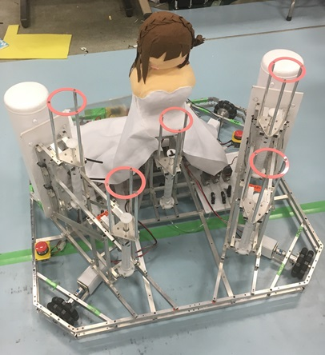
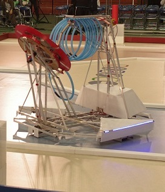

活動内容
「ロボコン」とは
ロボットコンテスト、通称「ロボコン」は、4月末にNHKから競技課題が発表され、その競技課題に沿ったロボットを10月の地区大会に向けて製作します。そこで活躍したロボットが12月初頭に有明アリーナで行われる全国大会に進むことができます。
機械班
機械班はロボットのハードウェアを作ります。機械班はおおまかに設計班と製作班に分けることができます。
- 設計班 設計班は主にロボットのハードウェアの設計を行います。
- 製作班 製作班は設計者が起こした図面をもとにロボットのパーツを作る仕事です。
設計ではロボットの構想を練ったりと、知識、技術、アイデアを必要とする役職です。
設計でロボットのおおまかな形が決まるのでとても重要な仕事ですが、その分やりがいがあります。
製作班では、製作の基礎(けがき、ボール盤、旋盤、フライス盤)を早いうちから身につけることができます。
その上、自分達でロボットを作っていくので、ロボットが完成したときの達成感は言い表せない程のものです。
電気班
電気班はロボットのソフトウェアを作ります。主に回路の製作とプログラミングなどを行います。
ロボットが完成すると目立たない陰の部分ではありますがロボットの頭脳とも言え、回路がなければロボットは動くことができません。
機体紹介
Aチーム B-ride


全長
マリー(左)：800cm
ハレルヤ(右)：600cm
総重量：約35kg(2台分)
結婚式をモチーフにしたマシン。
花嫁のマリーが可愛らしいブーケトスをします
Bチーム JK-FF


全長
キング(左):100cm
ジャック(右):100cm
総重量：約35kg(2台分)
高専生なら誰もが知っているJK-FF。
キングとジャックの圧倒的なコンビネーションは見ものです。
Aチーム 烏合の衆

全国大会出場
全長(展開時の高さ)
クロウ：115cm(奥側)
レイヴン：150cm(手前側)
総重量：30kg
翼をはためかせフィールド駆け巡る姿は獲物を捕らえる漆黒の烏の様！
無数の刀が敵を襲います。
Bチーム HORNET

全長(展開時の高さ)
110cm
総重量：30kg(2台分)
圧倒的な性能で観客の目を釘付けにした、瞬殺の貴公子。
一度に200発の武器を発射します。
Aチーム 忠犬 八公

全長(展開時の高さ)
60cm(左)
320cm(中)
150cm(右)
総重量：50kg
3機のロボットと1匹の忠犬！！
自作エアシリンダによるロボット昇降とカートでロボットを押しだします
Bチーム 矗 -NOV-

地区大会ベスト4
全長(展開時の高さ)
145cm(左)
240cm(中)
※650cm(右)
※展開時の橋の長さ
総重量：約24kg
日本人で初めて南極に上陸した秋田県民の白瀬矗さんを題材に海を越え上陸するマシンたち！
展開する橋の凄まじさにみんなの目はまんまるです
Aチーム ワッカマン

地区大会準優勝、全国大会出場
全長：約150cm
体重：約20kg
輪っかをダイナミックに飛ばして注目を集める正義のヒーロー！
円盤の遠心力で射程を調整します
Bチーム BLUE HAWAII

地区大会ベスト4
身長：約120cm
体重：約24kg
マスコットキャラクターのはなびちゃんは大人気！！
エアシリンダの調整で射程を調整します